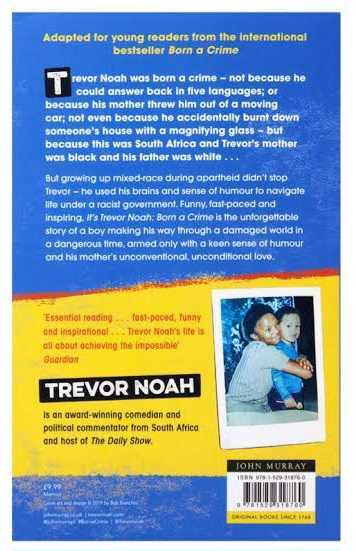
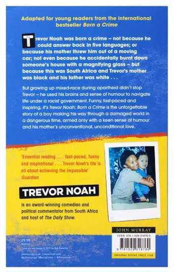

A Conflict of Love and Control
Abel wanted a traditional marriage
with a traditional wife, but he never fell in love with
subservient women. He only wants a woman who is free because his dream is to put her in a cage.
This quote from Born a Crime reveals the confusion between love and ownership.
Abel was attracted to Patrcia because of her strength, independence, and unique personality. But
once he had her, he tried to subdue the very qualities that attracted him in the first place.
I see this as a conflict of interest. Many men are attracted to women with principles and
determination, yet at the same time, they want to possess them.
Some of these men know exactly what they want but pretend to be someone else until they win her
over. Often, it’s not even about love, it becomes a way to prove to themselves that they can conquer
something difficult.
Others believe they’re into brave, outspoken women until those qualities start to challenge
traditional gender roles. Then, everything becomes about pride and ego. They start demanding respect
that no one ever took from them in the first place.
Sadly, many women only realize this after marriage, when asking for freedom feels too late.
Possession gets mistaken for love. Controlling behaviour is excused as care. It begins when their
opinions are ignored and slowly, they start losing the very parts of themselves that once stood out.
Eventually, they’re made to believe they can’t take a single step without that person. They stay
sometimes for the children, or because society frowns on divorced women. They don’t see what they’re
sacrificing until their health or happiness is affected or until people start asking about the marks
on their faces.
Unfortunately, Patrcia’s story is one of these. What she thought was love ended up costing her both
safety and family. Real love isn’t about putting someone in a cage. It’s about giving them the space to
fly, and still choosing to stay beside them.
 
